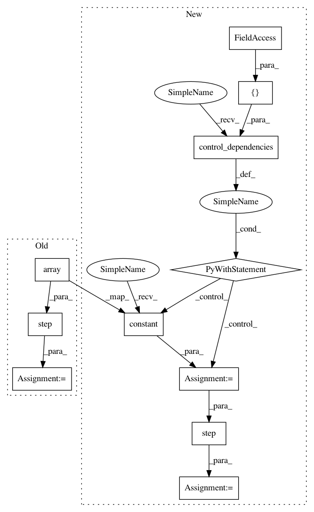

230503ac56636d91d53d728c247c6ea3d096eeb9,tf_agents/environments/tf_py_environment_test.py,TFPYEnvironmentTest,testFirstObservationIsPreservedAfterTwoSteps,#TFPYEnvironmentTest#Any#,269
Before Change
else:
tf_env = tf_py_environment.TFPyEnvironment(py_env)
(_, _, _, observation_t), step_data = tf_env.current_time_step()
_, step_data = tf_env.step(np.array([1]), step_data)
_, observation = self.evaluate(
[tf_env.step(np.array([2]), step_data), observation_t])
self.assertEqual(np.array([0]), observation)
After Change
else:
tf_env = tf_py_environment.TFPyEnvironment(py_env)
time_step = tf_env.current_time_step()
with tf.control_dependencies([time_step.step_type]):
action = tf.constant([1])
next_time_step = tf_env.step(action)
with tf.control_dependencies([next_time_step.step_type]):
action = tf.constant([2])
_, observation = self.evaluate([tf_env.step(action), time_step.observation])
In pattern: SUPERPATTERN
Frequency: 3
Non-data size: 11
Instances
Project Name: tensorflow/agents
Commit Name: 230503ac56636d91d53d728c247c6ea3d096eeb9
Time: 2018-11-30
Author: sguada@google.com
File Name: tf_agents/environments/tf_py_environment_test.py
Class Name: TFPYEnvironmentTest
Method Name: testFirstObservationIsPreservedAfterTwoSteps
Project Name: tensorflow/agents
Commit Name: 230503ac56636d91d53d728c247c6ea3d096eeb9
Time: 2018-11-30
Author: sguada@google.com
File Name: tf_agents/environments/tf_py_environment_test.py
Class Name: TFPYEnvironmentTest
Method Name: testOneStep
Project Name: tensorflow/agents
Commit Name: 230503ac56636d91d53d728c247c6ea3d096eeb9
Time: 2018-11-30
Author: sguada@google.com
File Name: tf_agents/environments/tf_py_environment_test.py
Class Name: TFPYEnvironmentTest
Method Name: testTwoStepsDependenceOnTheFirst